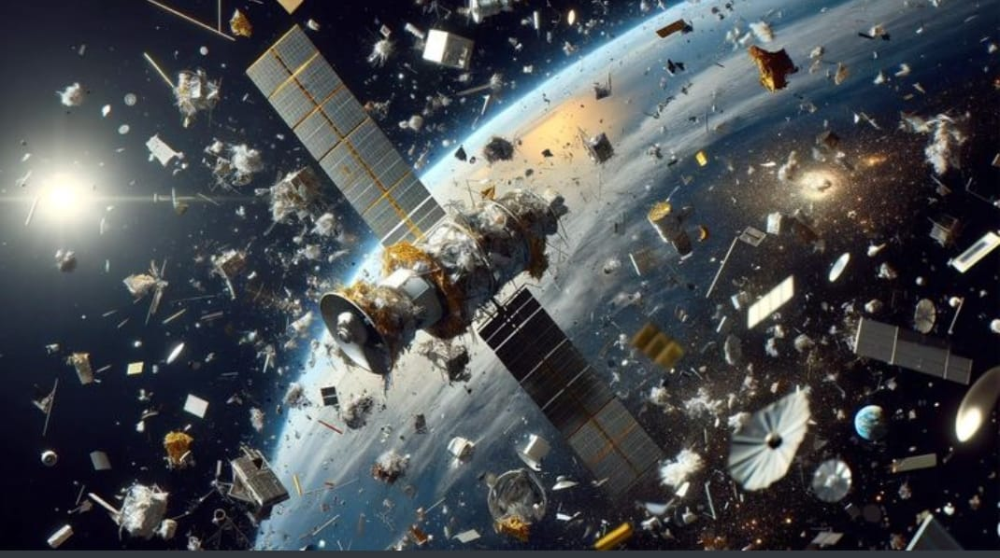

Space debris is the collection of defunct objects in orbit around Earth. It is also popularly known as orbital debris, space junk and space waste. Space debris include spent rocket stages, old satellites and fragments from disintegration, erosion and collisions. As their orbits overlap with new spacecraft, debris may collide with operational spacecraft and pose a significant hazard.
As of 2009, about 19,000 pieces of debris larger than 5 cm are being tracked. There are over 300,000 pieces larger than 1 cm that are estimated to exist below the 2000 km altitude. For a standard of comparison, the International Space Station orbits in the 300–400 km range. Both the 2009 collision and 2007 anti-satellite test events occurred at between 800 and 900 km.
Most space debris are smaller than 1 cm. They include the following: • dust from solid rocket motors • products of surface degradation, such as paint flakes • frozen coolant droplets that are released from RORSAT nuclear-powered satellites
Impacts of debris particles cause erosive damage in a manner similar to sandblasting. Damage can be reduced by the addition of ballistic shielding to the spacecraft. An example is a ‘Whipple shield’, which is used to protect some parts of the International Space Station.
The number of objects in space influences the chance of collision. Thus, there is a critical density where the creation of new debris is theorised to occur faster than the various natural forces that remove them.